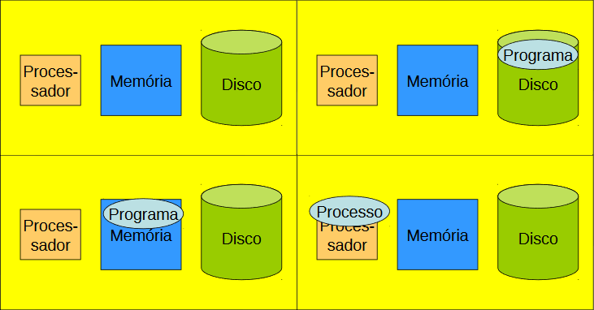
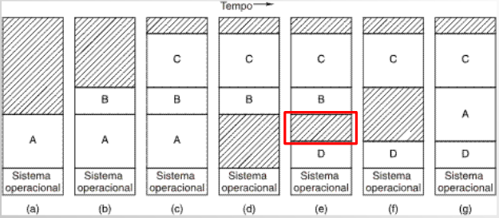
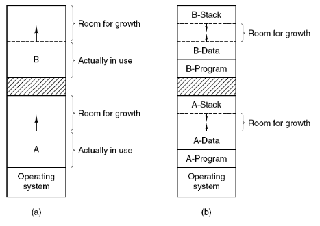
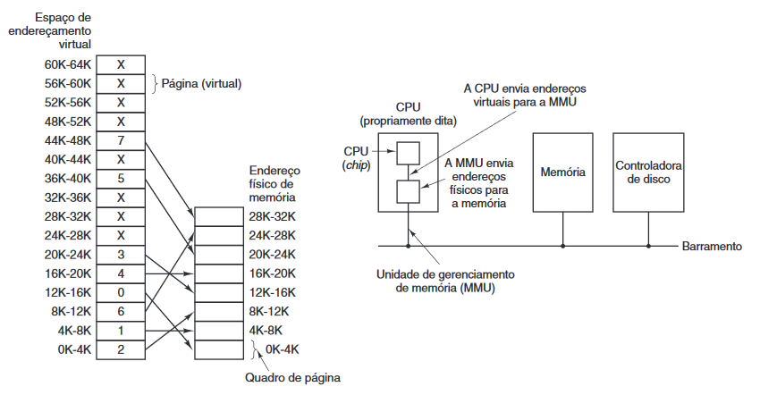
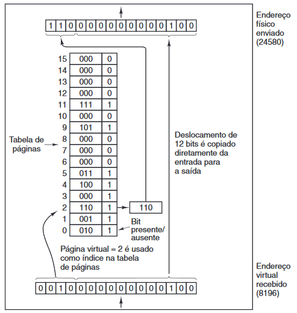

Idealmente, todo programador deseja dispor de memória: grande, rápida e não-volátil (neste caso, depende da aplicação).
Hierarquia de memórias
- pequena quantidade de memória rápida, de alto custo - cache
- quantidade considerável de memória principal de velocidade média, custo médio
- gigabytes de armazenamento em disco de velocidade e custo baixos
O gerenciamento de memória visa fazer uso eficiente da hierarquia de memórias, para ajudar na execução da aplicações.
Como rodar um programa?
- Dado o comando para executar um programa, é realizada uma sequência de instruções para copiar código e dados doprograma objeto do disco para a memória principal.
- PC aponta para o endereço de memória onde o programa foi escrito.
- Processador executa instruções do programa trazidas da memória.
Relocação e proteção
Não se sabe com certeza onde o programa será carregado na memória. Localizações de endereços de variáveis e de código de rotinas não podem ser absolutos.
Uma solução para relocação e proteção: uso de valores base e limite. Registradores especiais.
Registradores base e limite
- Usados para dar a cada processo um espaço de endereçamento separado (protegido) – partição.
- Base = início da partição
- Limite = tamanho da partição
Multiprogramação com partições fixas.
Partições fixas de memória:
- filas de entrada separada para cada partição
- fila única de entrada
Swapping: Troca de Processos (1)
- Alterações na alocação de memória à medida que processos entram e saem da memória.
- Regiões sombreadas correspondem a regiões de memória não utilizadas naquele instante.
Swapping: Troca de Processos (2)
- Alocação de espaço para uma área de dados em expansão.
- Alocação de espaço para uma pilha e uma área de dados, ambos em expansão.
Gerenciamento de memória livre

- Parte da memória com 5 segmentos de processos (P) e 3 segmentos de memória livre (Hole – H).
- Mapa de bits correspondente (Cada elemento da matriz representa um espaço de endereçamento; 1 para espaço ocupado e 0 para livre).
- Mesmas informações em uma lista encadeada (Os nós guardam qual o processo, qual a base e qual o limite; cada nó representa um espaço de endereçamento).
Memória virtual: Paginação
Existe um conjunto de endereços que os programas podem gerar, esses endereços são chamados de endereços virtuais e formam o espaço de endereçamento virtual.
Nos computadores sem memória virtual, os endereços são colocados diretamente no barramento de memória. Já com a memória virtual, os endereços vão para uma MMU (Memory Management Unit), que faz o mapeamento dos endereços virtuais em endereços físicos de memória.
Quando um programa é maior do que o espaço de memória disponível, o espaço de endereçamento será dividido em páginas. Na memória física teremos as molduras de página, que tem o mesmo tamanho da página.
Para armazenar o mapeamento entre o endereço virtual e físico (ou mapeamento de páginas virtuais em molduras) são usadas as tabelas de páginas.
Acelerando a paginação
O mapeamento de endereço virtual para endereço físico deve ser rápido.
Se o espaço de endereçamento virtual for grande, a tabela de páginas será grande = buscas mais lentas.
Memória Associativa ou TLB (Translation Lookaside Buffers)
- Tabela das traduções de endereços mais recentes;
- Uma cache para tabelas de página, memória associativa rápida.
Tabelas de Páginas Multi-Níveis
- Minimizam o problema de armazenar tabelas de páginas muito grandes na memória;
- Desempenho vs. Espaço ocupado.